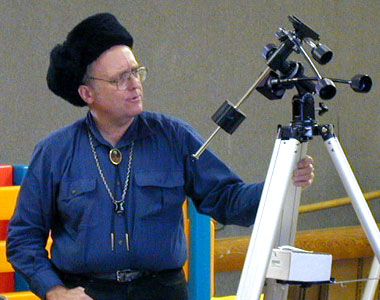

|  |
I have observed many of these things more than once - some bright and popular objects, over 100 times. Counting repeats, and also counting a few hundred instances when I reliably identified the location of something but could not spot it, my logs contain 22891 observations altogether. Yet for me, the great thrill has always been looking at something new, preferably new and difficult.
My present run of logbooks began in 1978, when I became much more active in a hobby I had let dwindle during college and graduate school. Even as a child, I had habitually written down what I saw in the sky, in a simple logbook. When I began observing again, I decided to augment that kind of record with a file-card cross-index, organized by object. I might not have done so had I known what I was getting into - my index now fills thirteen shoe-box sized containers - but I am glad I did. Otherwise, I would have no way to find observations of specific objects, or to know whether I had observed them at all.
From time to time I summarize things - I have many log pages showing how many objects of several different kinds I saw recently, and how many observations I made with different equipment. Only lately did I start breaking down new objects seen by equipment used to see them, so I can only estimate the contributions my various instruments have made to the list of different objects seen.
My observing program used to be simple: I only had a 7x50 binocular. With good dark adaptation, high transparency, and maniacal persistence, I managed to find all the Messier objects with it. I had not seen most of them before. I also mooched views of other things through telescopes belonging to friends and fellow astronomy club members, but soon I wanted more capable equipment of my own.
I built a fast 6-inch Newtonian, and learned to use it hand held, with no mounting. I retired it nearly twenty years ago, after 965 observations. Those included a Messier survey - I have done one with nearly every telescope or binocular I have possessed - but I also used it to begin working my way through the lists of galaxies, star clusters and nebulae in Burnham's Celestial Handbook. Burnham formed the basis of my observing for over a decade - the goal was to see everything in those lists north of 45 degrees south declination.
Presently I succumbed to aperture fever, and bought the largest telescope I have owned, the Celestron 14 that I later named Harvey. It has been a real workhorse, accounting for 10022 observations, nearly half the grand total - more than half if I subtract off all those Messier surveys. It has also been the telescope I most commonly use for chasing down new objects - I first saw the vast majority of those 10000 different things with the C-14. I don't know where the idea came from, that small telescopes get used more than large ones, but as far as my own experience goes, that notion rates with flat-earthism and the luminiferous ether as unadulterated nonsense. If I could have only one astronomical instrument out of all the ones I have owned, it would without question be my Celestron 14.
I soon found I occasionally wanted something quicker to set up, so I built a lightweight 8-inch f/5 tube-type Dobson, that was almost as handy as my mountless 6-inch. I used it nearly as much as the 6-inch -848 observations. Those two telescopes still rank third and fourth in numbers of observations made with various telescopes. The 8-inch also did yeoman duty with the brighter objects in Burnham.
My observing declined in the mid-1980s. I was nearly done with Burnham, and had neither object lists nor charts suitable for deeper work. What's more, the C-14 drew long lines at star parties, enough so I didn't get to use it much. I started to bring smaller telescopes to star parties, but there weren't a lot of new things I could see with them. These instruments included binoculars larger than my old 7x50, and a Vixen 90 mm fluorite with wonderful optics.
In the mid 1990s, I evaluated an Intes 6-inch Maksutov-Cassegrain at the request of a local dealer, and was impressed enough to buy it. It was a nice match for the Great Polaris mount that came with my 90 mm fluorite, and its stubby carrying case was less awkward to haul around than the long box of the Vixen OTA. About then, I finally got around to finishing the last few objects in my Burnham observing program. Then I ran across a list all the 2500-odd objects that William Herschel had discovered, posted on the internet.
Herschel did most of his observing with telescopes vastly smaller than his well-known 48-inch monster, but his list of discoveries is suitable for smaller instruments, considering that he used speculum metal mirrors and had to find things anew, without knowing their positions. My index revealed that I had already seen about half the list. Finishing it took a year or two. Most of what was left was indeed within the range of the Intes 6-inch, though many objects took more aperture - one or two required borrowed 18-inch Dobsons to ferret out. The Intes is second only to Harvey in total number of observations made, but a poor second, with a count of 1888.
As my Herschel program wound down, I bought a copy of a massive, expensive new reference work - Millennium Star Atlas, with enormous numbers of deep-sky objects accurately plotted, and with a stellar limiting visual magnitude of 11 - 1.5 magnitudes fainter than on my best previous charts. Gazing at the atlas pages, I realized there would usually be charted stars in the field of a low-magnification eyepiece in my old Celestron 14. With so many guideposts, finding deep-sky objects would be easy, and the atlas pages had lots of new things.
I described recommissioning the C-14 in another essay. It proved as fine a match for Millennium as I hoped. During the next two and a half years, I worked nearly all the way through Millennium, page by page, north of 39 degrees south declination. I didn't see every deep-sky object plotted - many Abell galaxy clusters were invisible, and lots of planetaries were too faint to see or too small to appear non-stellar. Even so, there were so many objects that I could start at one side of a chart and star-hop across it, logging things as I came to them. That was lots quicker than locating objects that are far apart.
My experience with small telescopes left me fascinated with them. During the 1990s I played with many, doing a Messier survey with each, but it was rare that I used them to see anything new. The major exceptions to that rule came with large binoculars - I have made extensive use of a 14x70 (519 observations) and a 25x100 (465 observations). There are lots of large bright and dark nebulae best seen with the wide fields of view they provide. The small instrument I have most used is Refractor Red, a dayglow-painted 55 mm Vixen fluorite refractor, but its 568 observations include almost nothing new.
Two other modestly large telescopes figured prominently in observing new objects, one because of geography and the other because of panache. I built a 10-inch f/5 Dobson to fit in a case as airline checked baggage, and took it to Hawaii in late May, 2000. I observed about 400 new southern-sky objects from Mauna Kea, mostly with it, though a few were with my 14x70. I have made 580 observations with altogether with that 10-inch. And in December, 2000, I acquired an Astro-Physics 10-inch Maksutov-Cassegrain, and named her Gillian. I do not intend this instrument as a telescope for vague nothings, but between new, high-end coatings and small central obstruction, the AP-10's performance on deep-sky objects is closer to Harvey's than mere collecting area would suggest. It is nice to have a high-end planetary instrument that can also find faint fuzzies. I have logged 811 observations with the AP-10 so far, including 364 of objects new to me.
As I write these words, the number of different objects I have logged as actually seen is 10026. 922 are stars - mostly doubles that I resolved, or tried to resolve. 62 are solar-system objects, both natural and human-made. 5967 are in the New General Catalog - that's about three quarters of the NGC - 553 in the Index Catalog (IC), and the rest are a wide assortment of other deep-sky targets, including large contingents of galaxies from the ESO, MCG, and UGC catalogs.
One object was not really celestial: On a night when it was possible to see all the planets without pushing twilight, I looked down between my feet and made a mental note to include "Earth" in the log. The nearest celestial object might have been a meteor, but I like to think it was Space Shuttle Atlantis, engulfed in a re-entry fireball, streaking high across San Francisco Bay as dawn turned the morning sky gray. The farthest "object" I have looked for was the Hubble Deep Field, in the remote depths of the cosmos. I didn't see anything there, C-14 notwithstanding. The most distant thing I have actually seen was probably the quasar that is gravitationally lensed as Einstein's Cross. I always say that aperture wins, and having a whole galaxy scooping up light from this distant target indeed helped a lot.
As my Millennium observing program winds down, I am not sure what to do next. I would like to see more of the southern sky, so perhaps travel is in order. Beyond that, the thought of professional surveys of millions of galaxies makes me wary of the obvious next step, of getting an even bigger telescope and even better charts. Yet I imagine that I will find more observations to make. The universe is full of wonders.